Las organizaciones obreras quieren utilizar sus fondos contra la especulación.
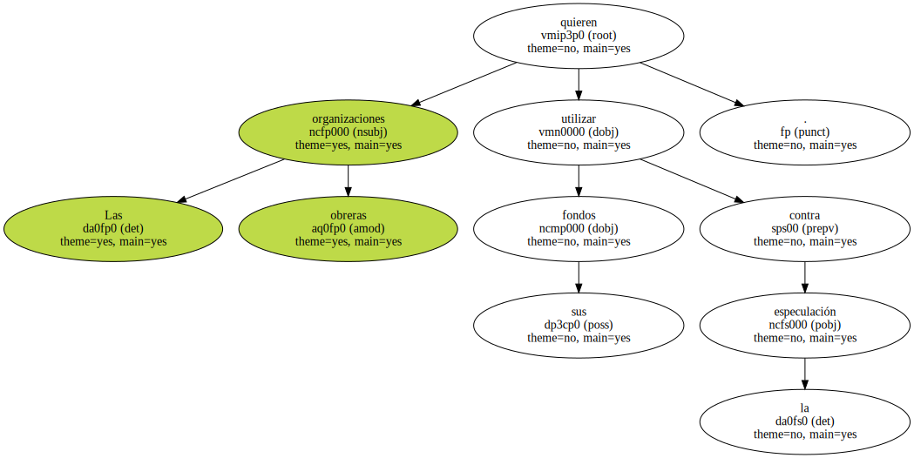Los líderes sindicales internacionales advirtieron ayer de que " es el momento de dejar atrás las palabras , y actuar para solucionar los problemas sociales que plantea la mundialización del comercio " , tras el fracaso de la cumbre de Seattle ( Estados Unidos ) y los mensajes reformistas del presidente estadounidense y el primer ministro británico en el Foro Económico Mundial de Davos ( Suiza ).
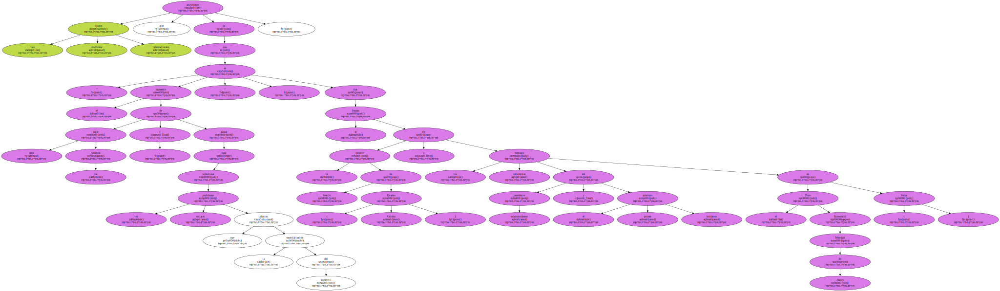El primer paso será utilizar los fondos de pensiones sindicales contra la mundialización descontrolada.
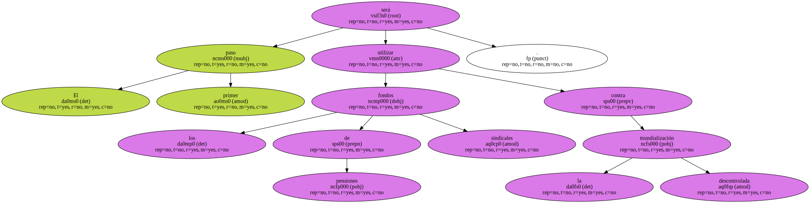Los sindicatos anunciaron una estrategia de coordinación internacional para controlar el destino de las inversiones de los fondos de pensiones de trabajadores.
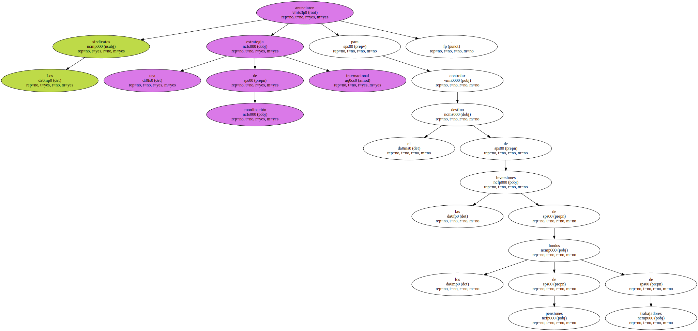Los 2.873 billones de pesetas depositados en fondos de pensiones privados de empleados dan a las centrales un gran poder de intervención.
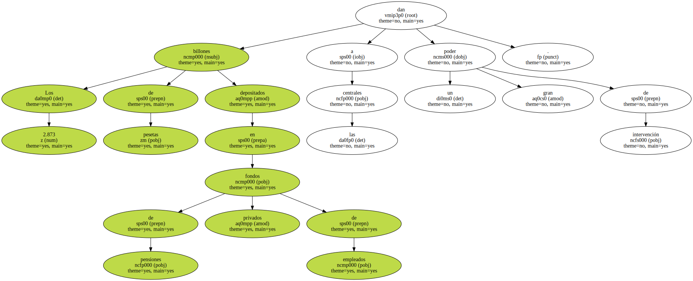El objetivo es evitar que la especulación vaya contra el propósito de los sindicatos de favorecer el desarrollo de países pobres.
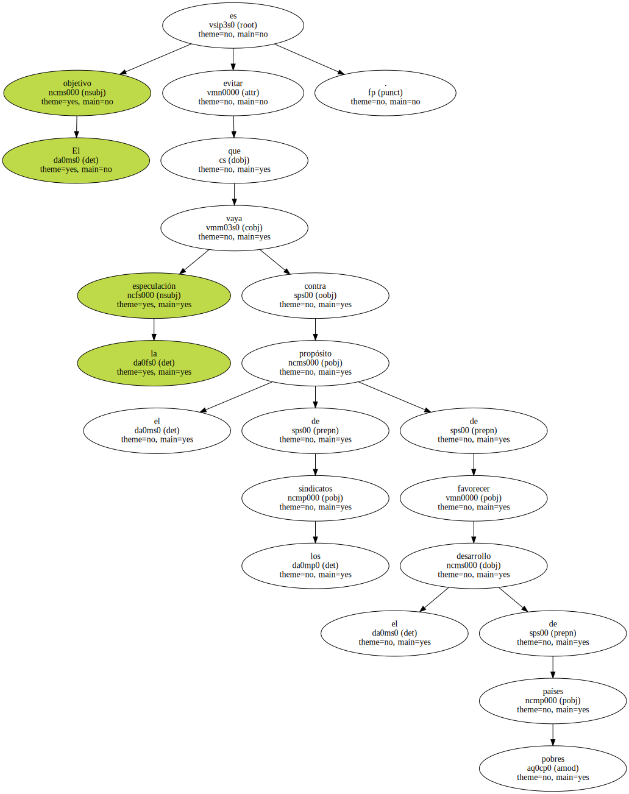Tras la presión ejercida por los sindicatos y las organizaciones no gubernamentales contra la mundialización de la economía , " las multinacionales han adoptado un discurso más social , pero siguen actuando de forma brutal " , afirmó ayer Philip Jennings , secretario general de Union Network International , en una rueda de prensa convocada con el consentimiento del Foro de Davos.
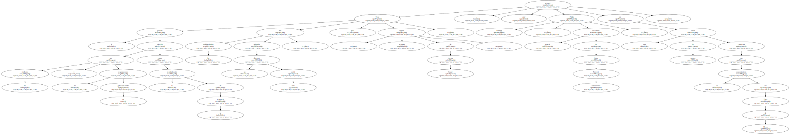Uno de los argumentos contra el comercio sin reglas justas es que en 10 años el trabajo infantil se ha doblado.
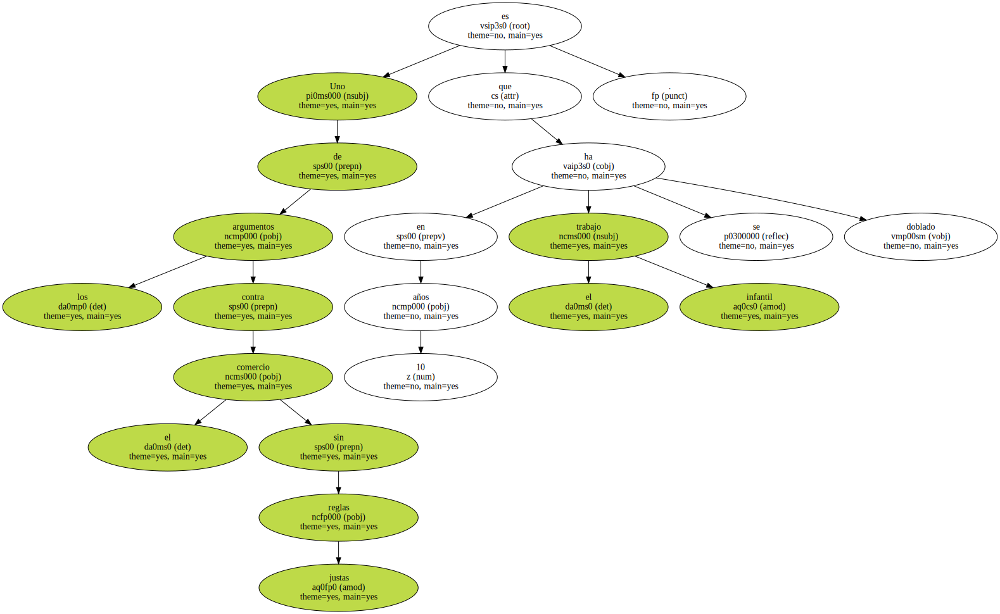Davos fue ayer el escenario de un encuentro entre los dos amos de Internet.

La gran expansión de la Red requiere un nuevo orden internacional consensuado , según afirmó ayer en Davos Steve Case , presidente del grupo AOL-Time Warner.
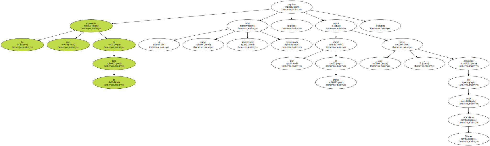Se trata de que el boom de la Red sea " respetuoso con la soberanía de cada país y su sistema fiscal " , indicó Case.
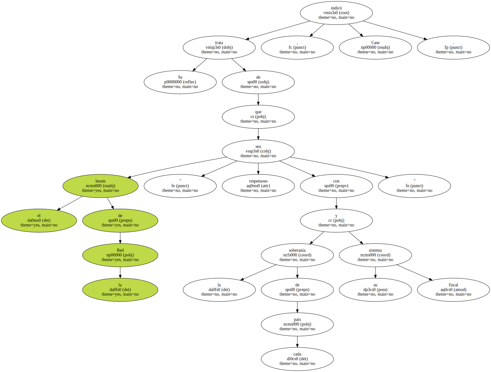Un acuerdo internacional de esas características evitaría que Internet sea un paraíso fiscal.
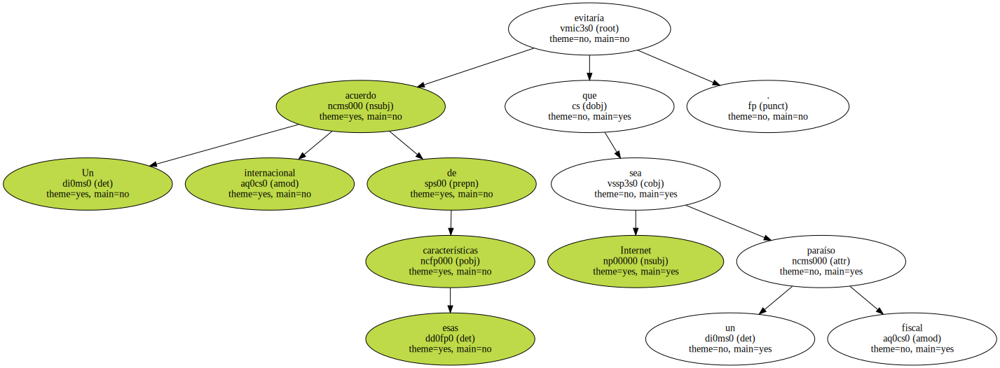El presidente de Microsoft , Bill Gates , atribuyó el retraso de Europa respecto a Estados Unidos en la implantación y desarrollo de Internet al monopolio en las llamadas telefónicas locales que todavía existe en muchos países , entre ellos España.
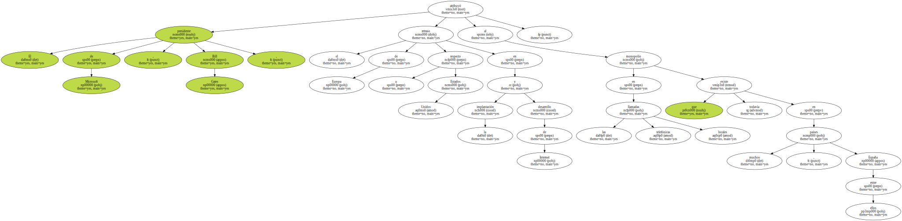Los usuarios de la Red en EEUU navegan sin límite de horas con una tarifa de unas 3.380 pesetas mensuales.
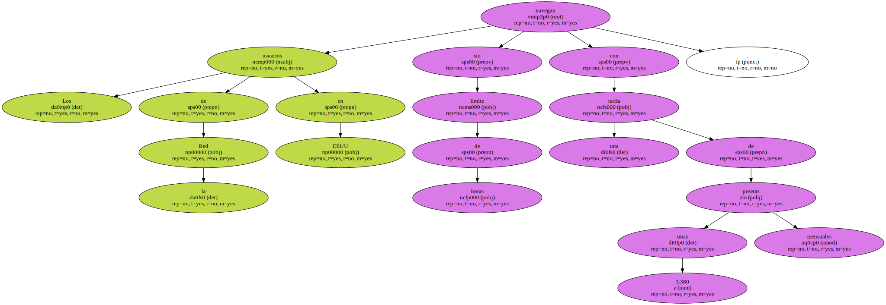Con estas facilidades , los internautas estadounidenses utilizan la Red una media de 40 horas mensuales , frente a las 15 de Europa.
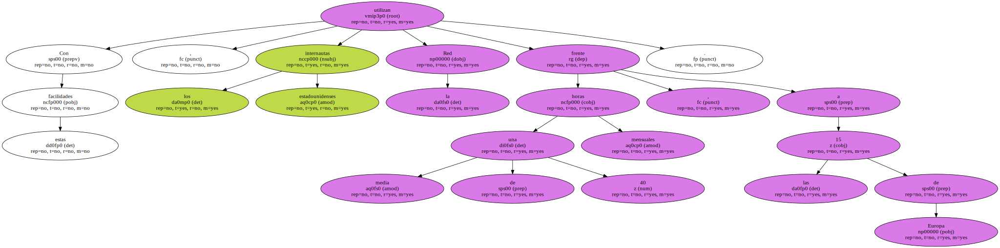